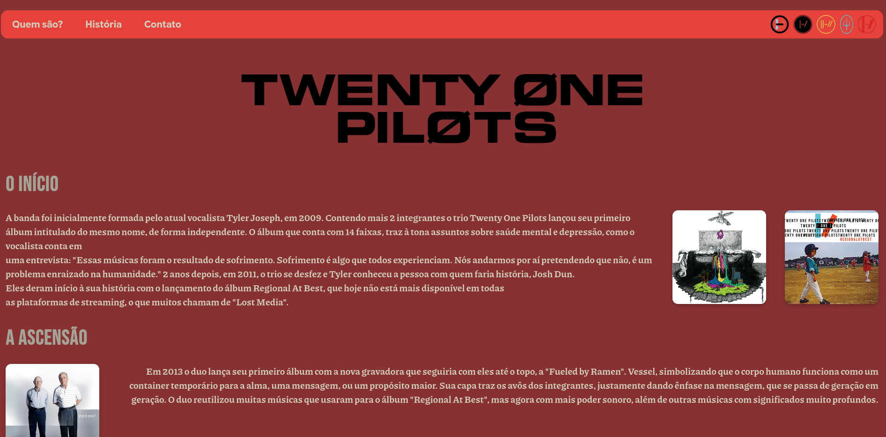
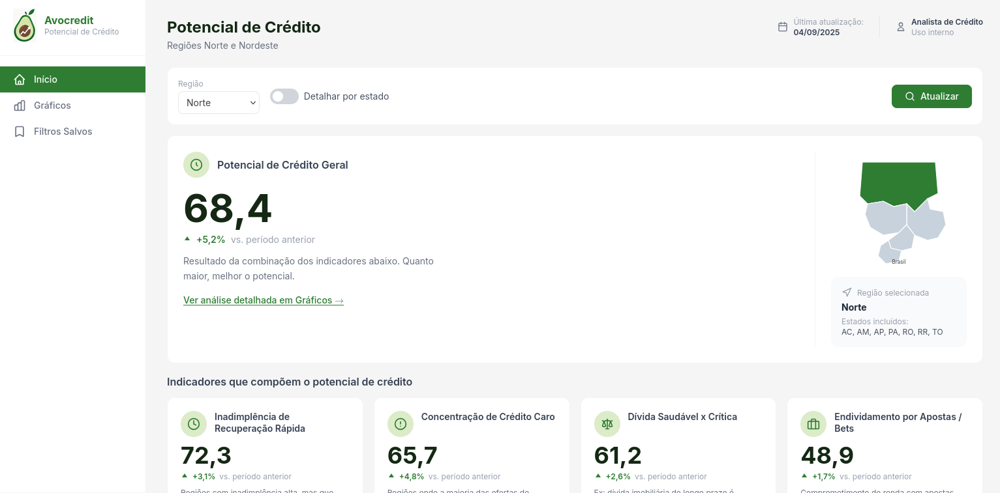

Formações acadêmicas
Ensino Médio
Ensino fundamental e Ensino médio feitos no Colégios Univap em São José dos Campos
2018 - 2024
Ciência da Computação
Bacharelado em Ciência da Computação na UNIP
2025 -
DSM
Tecnólogo em Desenvolvimento de Software Multiplataforma na FATEC
2025 -
Projetos pessoais


AvoCredit
Projeto de Análise de Crédito para pessoas endividadas na região Norte e Nordeste.
Atividade API realizada para a FATEC.
Habilidades
Hard Skills
-
 Python
Python -
 Html
Html -
 CSS
CSS -
 Linux
Linux - Flask
-
 MySQL
MySQL
Soft Skills
- Disciplina
- Foco
- Proatividade
- Trabalho em equipe
- Adaptabilidade
- Comunicação Objetiva